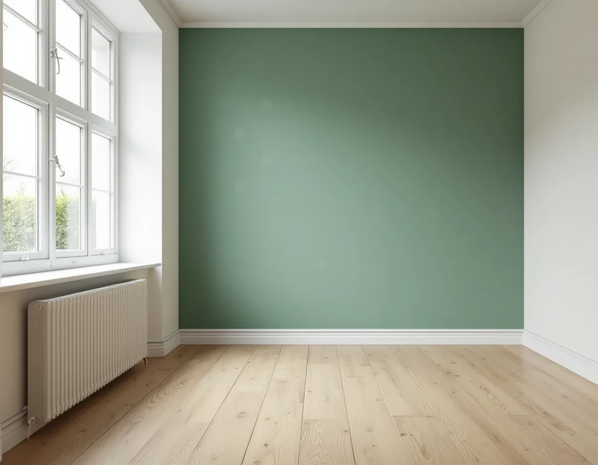
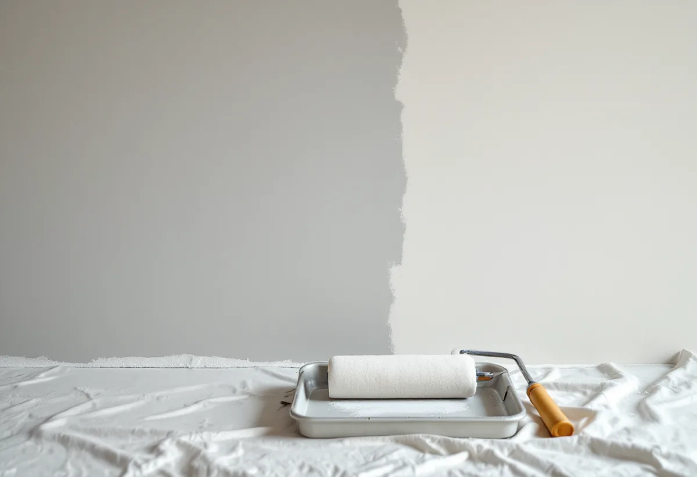

Platsbesök
Vi ser vilket underlag väggen har och om rummet värms hela året.
I Hässelby villastad står äldre trävillor och tätare småhusgrupper från 1960- och 1970-talen sida vid sida, och väggarna inne skiljer sig lika mycket som husen utanpå. Geal Entreprenad AB tapetserar i radhus, kedjehus och villor i Hässelby, och underarbetet väljer vi efter väggen.

Stadens vägledning Varsam utveckling av småhus- och villaområden beskriver villastäderna som privat organiserade områden med individuellt utformade hus, där trä var det vanligaste fasadmaterialet och glasverandor, takkupor och snickarglädje gav variation. Under 1960- och 1970-talen ersattes många villor i Hässelby villastad av täta, stora och sammanhållna grupper av enhetlig småhusbebyggelse.
Stadsdelen är fortfarande främst småhus. Enligt områdesfakta 2025 finns 7 029 bostäder i Hässelby villastad, varav 5 009 i småhus. Av bostäderna är 4 757 äganderätter, så det är oftast husägaren själv som bestämmer vad som ska upp på väggarna.
Vägledningen beskriver också hur villastäderna har förtätats genom att tomter delats av, och att radhus, parhus och mindre flerfamiljshus har byggts både inom och intill den ursprungliga bebyggelsen. Olika tidsepoker finns alltså representerade på samma gata, och det gäller också väggarna inne: en äldre trävilla, ett grupphus och ett nyare hus kan kräva var sitt underarbete.

Svenska Byggnadsvårdsföreningen räknar gipsskivor, betong och puts som lämpliga underlag för tapet i nyare hus. Är väggen av gips med ett enda lager gammal tapet är det enligt föreningen ingen fara att sätta ny ovanpå. Det känsliga är spacklingarna på skivorna, som oftast inte är förlimmade.
Föreningen beskriver ett sätt att lösa det: stryk väggen med utspätt tapetklister, hälften stärkelseklister och hälften vatten, och låt det torka innan den nya tapeten sätts upp.
Ska de gamla lagren bort helt går det att lösa upp dem med vatten. Kulturen i Lund skriver att den som blöter upp ett tapetsjok kan skilja de olika lagren från varandra, och ibland följa modets växlingar bakåt genom åren.
Kulturen i Lund skriver att vinyltapeten slog igenom på allvar på 1970-talet, med en yta av pvc-plast som var lättskött och hållbar. Tapeter i starka färger med stora medaljongmönster ersatte då 1960-talets färglösa tapeter med svaga mönster. Sitter det en tät tapet kvar sedan dess tar vi ner den innan väggen förlimmas.
Byggnadsvårdsföreningen beskriver non-woventapeter som plastbehandlade och täta. I ett hus som värms upp året runt är ett tätt ytskikt på insidan inget problem enligt föreningen, så i ett grupphus som värms hela året är valet friare. I de äldre villorna kan underlaget vara ett annat. Föreningen skriver att dålig vidhäftning kan befaras i hus från 1920–1950-talen, där väggarna behandlades med lim och krita, och att sandspackel kom vid mitten av 1950-talet. Där provar vi väggen innan vi bestämmer hur den ska förberedas. Mer om målning av fasad och snickerier i stadsdelen finns under målare i Hässelby.
En glasveranda som inte värms på vintern är ett annat rum än vardagsrummet. Byggnadsvårdsföreningen påpekar att fukt kan anrikas bakom ett tätt skikt om huset kallställs, och att det kan bildas mögel under ett tätt ytskikt om huset står ouppvärmt periodvis. Där väljer vi hellre en papperstapet med stärkelseklister än en tät non-woventapet. Vi frågar därför hur rummet används under året innan tapeten beställs, och planerar ni att värma verandan längre fram kan tapetvalet vänta tills det är bestämt.
Det gäller också rum där luftfuktigheten blir hög. Föreningen skriver att tapeter kan användas på många underlag, bara inte luftfuktigheten blir för hög, som den kan bli i kök och badrum.
Vi ser vilket underlag väggen har och om rummet värms hela året.
Nedtagning, förlimning och uppsättning redovisas som egna poster.
Gamla tapeter blöts upp och tas ner där det behövs.
Spacklingar lagas och slipas, och väggen stryks med utspätt klister.
Tapeten sätts upp våd för våd, och skarvarna trycks till.
Vi går igenom rummen med dig och lämnar överbliven tapet för framtida lagningar.
Skatteverket räknar tapetsering som rotarbete i ett småhus, och samma sak gäller i bostadsrätt och ägarlägenhet.
Avdraget är 30 procent av arbetskostnaden, högst 50 000 kr per person och år och högst 75 000 kr tillsammans med rutavdrag. Material som tapet och klister ger inget avdrag, och inte heller resor. Geal drar av avdraget direkt på fakturan.
Hur många lager som ska ner, hur mycket spackling väggarna behöver och hur stora ytorna är styr mest. Efter ett gratis platsbesök får du ett skriftligt kostnadsförslag. Ska flera rum göras räcker ett besök för hela huset, och vill du ha samma tapet i flera rum räknar vi på antalet rullar för alla rum samtidigt.
Fasad, fönster och invändig målning.
Målare i Stockholm →Takbyte, takbesiktning och plåtarbeten.
Takläggare i Hässelby →Villastaden, Hässelby strand och gård.
Takrenovering i Hässelby →Styckade tomter, gränser och kartan.
Attefallshus i Hässelby →Källarbadrum, backventil och bostadsrätt.
Badrumsrenovering i Hässelby →Riva, bygga nytt och delad tomt.
Byggföretag i Hässelby →Villastaden och radhusen.
Fasadmålning i Hässelby →Villastad, sommarstugor och grupphus.
Fasadrenovering i Hässelby →Villor, radhus och grupphus.
Fönsterbyte i Hässelby →Radhusen i Hässelby gård.
Fönsterrenovering i Hässelby →Slipa trägolvet – eller lägga nytt.
Golvläggare i Hässelby →Golvet under mattan.
Golvslipning i Hässelby →Kök i villor och radhus.
Köksrenovering i Hässelby →Villastad, grupphus och radhus i Hässelby.
Målare i Hässelby →Plåttak efter eternit, rännor och beslag i Hässelby.
Plåtslagare i Hässelby →Altan, bod och plank i villastaden och radhusen.
Snickare i Hässelby →Eternit och asbest på taket.
Takbyte i Hässelby →Hus som vuxit i omgångar.
Tillbyggnad i Hässelby →Grupphusen, eterniten och ventilationen.
Totalrenovering i Hässelby →